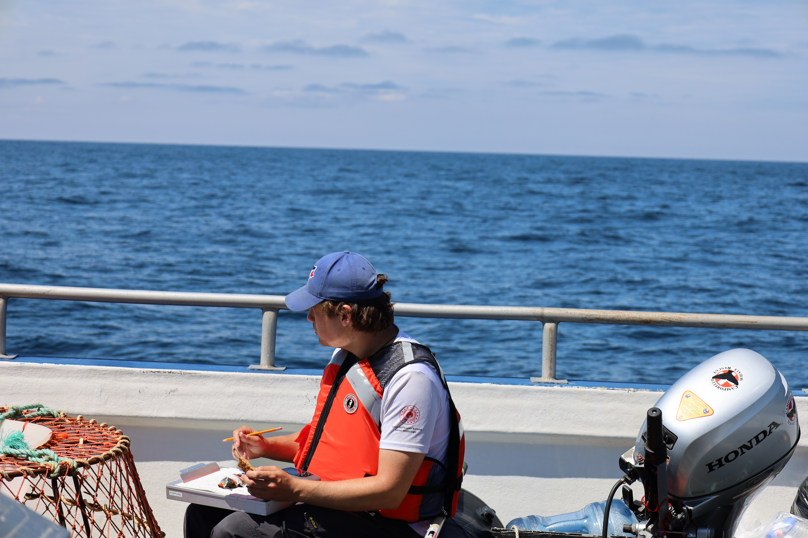

North Atlantic Right Whales
Investigating the behaviour and ecology of North Atlantic right whales, an endangered species found in the western North Atlantic.
I'm Jay Kirkham, a PhD student at Dalhousie University studying the behaviour and foraging ecology of North Atlantic right whales.
Explore my research About me
I am currenty a PhD student at Dalhousie University with an interest in how the behaviour of marine mammals infuences their interaction with humans.
My doctoral research focuses on the behaviour and foraging ecology of North Atlantic right whales, an endangered species whose recovery has been limited by human activity, primarily through entanglement in fishing gear and collisions with vessels.
This website brings together my research, fieldwork, publications, collaborations, and interactive scientific applications.
My research uses ecological and behavioural approaches to better understand marine animals and the environments they depend on.
Investigating the behaviour and ecology of North Atlantic right whales, an endangered species found in the western North Atlantic.
Exploring how marine animals find and use food resources, and how environmental conditions influence foraging behaviour.
Understanding how marine animals interact with their environment and how behaviour can inform conservation and management.
A collection of fieldwork, research experiences, and places connected to my work.
Research papers, scientific contributions, and academic work.
Interactive applications developed to explore, visualize, and communicate scientific data.
Explore the interactive Mediterranean turtle mapping application.
Open applicationExplore the interactive signal simulation application.
Open applicationExplore the interactive PlanktonPlotter application.
Open applicationExplore locations connected to my research and professional experiences. Select a marker to see its location information.
Map markers are approximate regional locations. They can be adjusted as the website is developed.
Research depends on collaboration, knowledge sharing, and connections across scientific communities.
Learn more about the Fortune Whale Lab and its marine mammal research.
Visit Fortune Whale Lab →Learn more about DEKAMER and its marine turtle research and conservation work.
Visit DEKAMER →For research collaborations, scientific questions, or professional inquiries, connect with me through my academic and professional profiles.